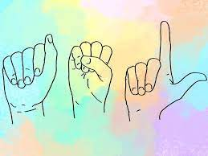

American Sign Language Club

What is ASL?
American Sign Language (ASL)
is a natural language that serves as the predominant
sign language of Deaf communities
What are the Elements of ASL?
The five elements are:
handshape, movement, palm orientation,
location, and facial expression
Fun Facts!
- There are more than 200 different sign languages used around the world
- ASL is considered a foreign language
- ASL is the third most popular language in the U.S.
- There are 300+ variations of sign language
- Even within ASL, there are both “slang” movements
and slight regional distinctions in how letters
and words are formed in American Sign Language
Famous Deaf People!
- Ludwig van Beethoven
- fully deaf, pianist and composer
- Millie Bobby Brown
- half deaf, star of Netflix's Stranger Things
- Rob Lowe
- half deaf, 80's actor in shows such as
The Outsiders, The West Wing, and Parks and Recreation
- Bill Clinton
- almost fully deaf(wears hearing aids), former president
- Whoopi Goldberg
- almost fully deaf(wears hearing aids), actress staring in movies like
Sister Acts 1 & 2, and Fatal Beauty
NEXT-->>